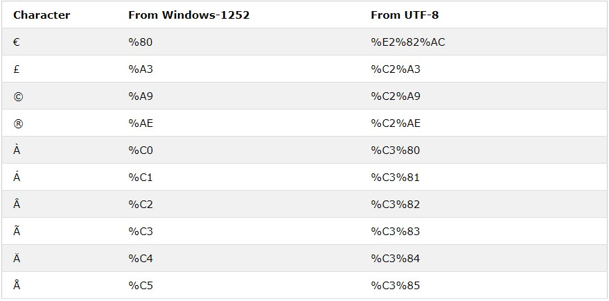

Una URL es otra palabra para una dirección web.
Una URL puede estar compuesta de palabras (por ejemplo, w3schools.com) o una dirección de Protocolo
de Internet(IP)(por ejemplo, 192.68.20.50).
La mayoría de las personas ingresan el nombre cuando navegan, porque los nombres son más fáciles de
recordar que los números.
Los navegadores web solicitan páginas de servidores web mediante una URL.
Un localizador uniforme de recursos (URL) se utiliza para abordar un documento (u otros datos) en la web.
Una dirección web como https://www.w3schools.com/html/default.asp sigue estas reglas de sintaxis:
esquema://prefijo.dominio:puerto/ruta/nombre_de_archivo
La siguiente tabla enumera algunos esquemas comunes:
| Esquema | Corto para | Usado para |
|---|---|---|
| http | Protocolo de Transferencia de Hipertexto | Páginas web habituales. No encriptado |
| https | Protocolo seguro de transferencia de hipertexto | Páginas web seguras. Cifrado |
| ftp | Protocolo de transferencia de archivos | Descarga o carga de archivos |
| file | Un archivo en tu computadora |
Las URL solo se pueden enviar a través de Internet utilizando el juego de caracteres ASCII . Si una URL contiene
caracteres fuera del conjunto ASCII, la URL debe convertirse.
La codificación de URL convierte los caracteres que no son ASCII a un formato que se puede transmitir a través
de Internet.
La codificación de URL reemplaza los caracteres que no son ASCII por un "%" seguido de dígitos hexadecimales.
Las URL no pueden contener espacios. La codificación de URL normalmente reemplaza un espacio con un signo más
(+) o %20.
Su navegador codificará la entrada, de acuerdo con el conjunto de caracteres utilizado en su página. El juego de caracteres predeterminado en HTML5 es UTF-8.
